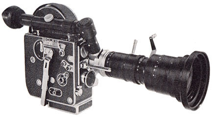

H-16 S-4
16mm Camera
1965
- OVERALL DIMENSIONS: 8 1/2" x 6" x 3"
- WEIGHT: Approximately 6 lbs
- OUTER CASE: Highly polished duraluminium body, covered in genuine Morocco leather. Metal parts are chrome-plated.
- FILM CAPACITY: 100ft (30m) and 50ft (15m) daylight loading spools of 16mm film.
- THREADING: Automatic threading and loop forming. The end of the film is simply placed in a channel leading to the feed sprocket. The release is pressed and the film is then automatically threaded throughout the entire mechanism.
- MOTOR: Constant speed, spring motor mechanism; governor controlled. Large winding handle folds downward and attaches to camera when not in use. Spring cannot be over-wound. 8:1 and 1:1 external drive shaft permits the attachment of an electric motor.
- TURRET: Rotating turret with folding lever; Accommodates three interchangeable C mount lenses; Built-in turret lock.
- VIEWFINDER: A cupped eyepiece or eye-level focuser allows for critical focusing through a groundglass screen. Parallax correcting 'PC-12' preview finder gives an exact viewing field for lenses of four focal lengths: 16mm, 25mm, 50mm and 75mm.
- VARIABLE SPEED: 12, 16, 18, 24, 32 and 64 frames per second
- RELEASE BUTTON: provides for the making of continuous exposures by a finger-tip release on the front of the camera. A side release allows for locked, hands-free running or single frame exposures.
- SHUTTER: 144 degree aperture shutter
- FOOTAGE COUNTER: adds and subtracts accurately in forward or reverse motion and automatically returns to zero when film is reloaded into the camera.
- AUDIBLE FOOTAGE INDICATOR: A distinct click announces the passing of each 10 inches of film through the gate. This mechanism may be disengaged, if desired, by simply moving a lever.
- FRAME COUNTER: Twin dial counts frames individually and in total; Adds frames in forward motion and subtracts when film is wound backwards. Dial may be reset manually at any time.
- SINGLE FRAME: Time lapse and animation is possible by using the side release button or an accessory cable release and adapter; I-T lever allows for timed or instantaneous single exposures.
- MANUAL REWIND: Clutch disengages spring motor and permits forward movement and backwind without running down the spring; allows for dissolves and superimposition.
- FLAT BASE: Contains three tripod sockets: Two 3/8" thread and one 1/4" thread. Front of the base is removable for easy mounting of the Bolex Matte Box.
Notes and Comments
In 1965, the body of the H model camera was redesigned to include a 1:1 drive shaft. To make room for this shaft, the "I-T" time lever was replaced with a small knob that was located next to the speed dial.
Although it was only the second camera in the S-series, it was termed the S-4. The trailing number "4" was used to identify all H model camera bodies with the newly introduced 1:1 drive shaft.
Copyright © 2005-2007 bolexcollector.com
Return to top of Page
Return to top of Page